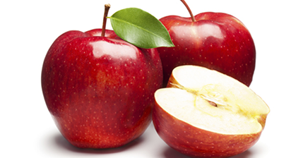

Manzana Roja
La manzana roja es una fruta popular y versátil, distinguida por su piel brillante y pulpa jugosa. Es una excelente fuente de vitamina C, antioxidantes (como la quercetina) y fibra dietética.
Información nutricional (por 100g)
- Calorías: 52 kcal
- Carbohidratos: 14 g (azúcares naturales ~10 g)
- Fibra: 2.4 g
- Proteínas: 0.3 g
- Grasas: 0.2 g
- Vitamina C: ~7% VDR